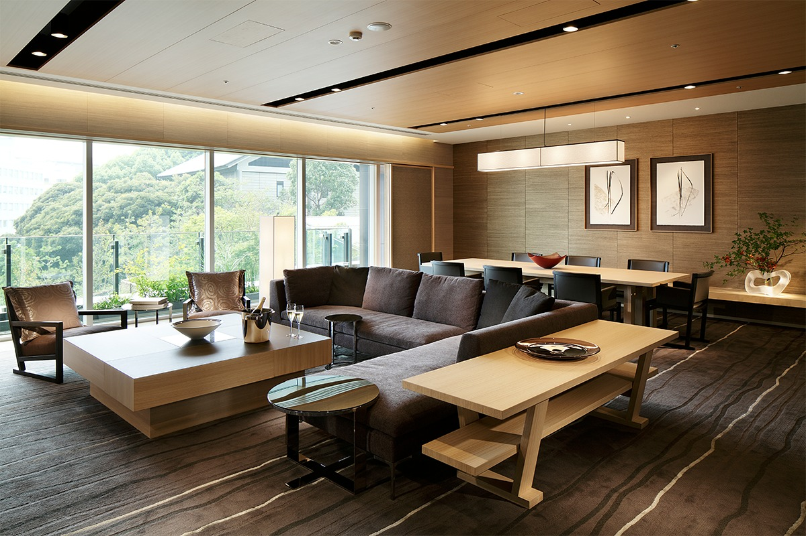
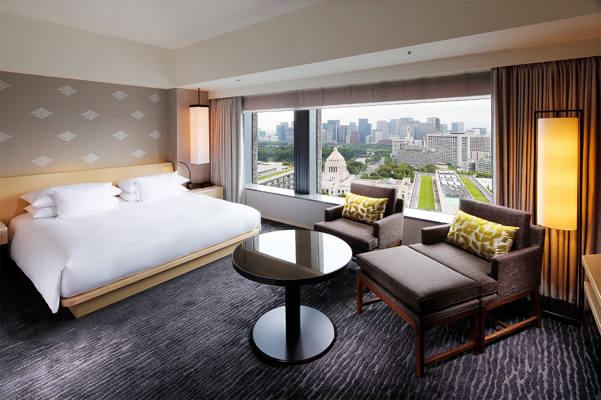
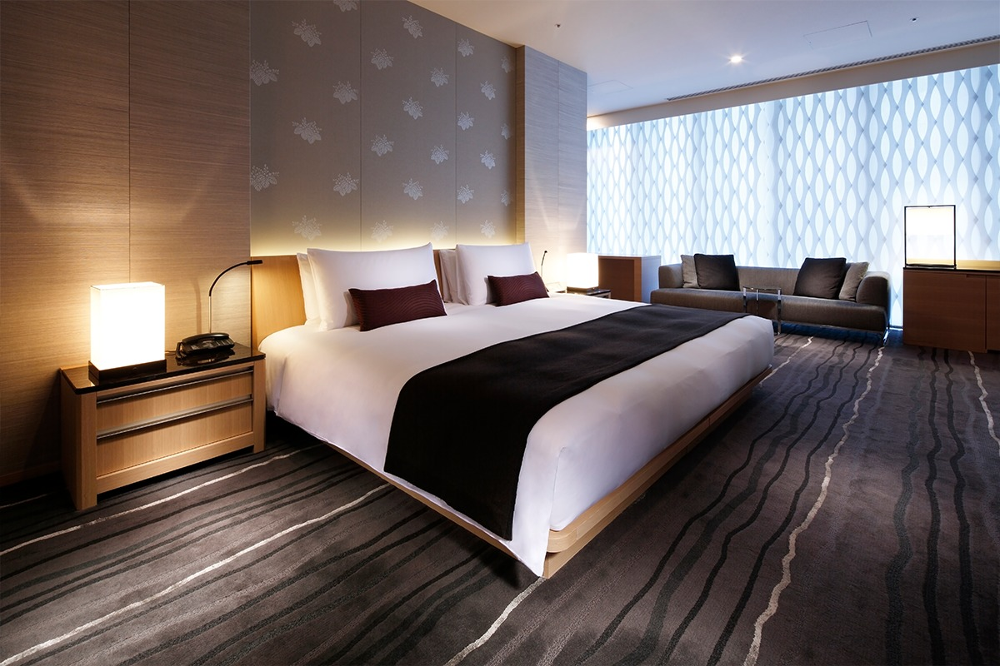
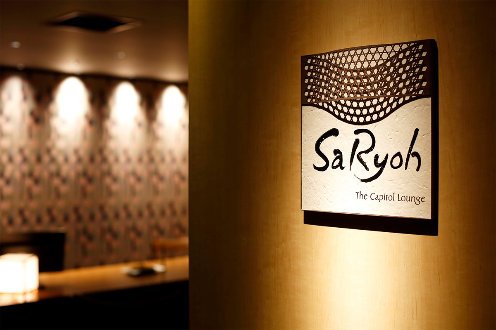
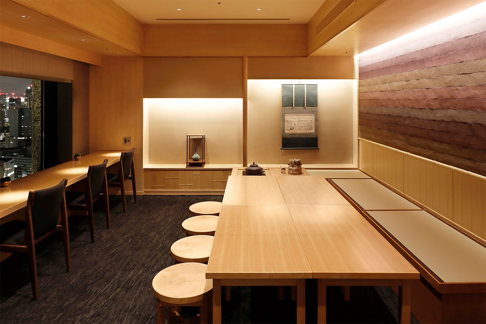
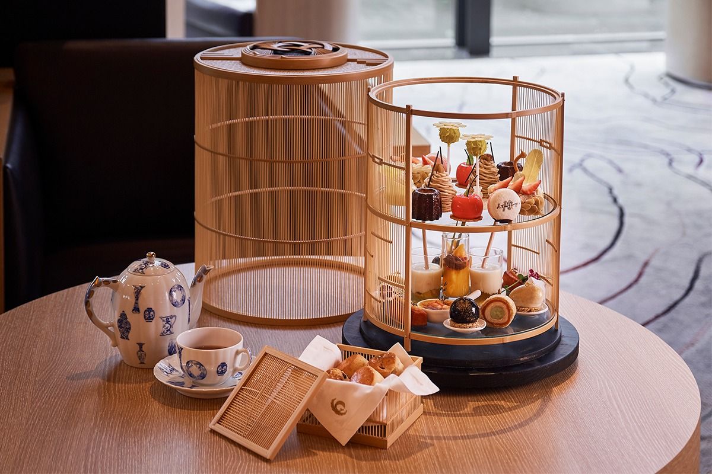
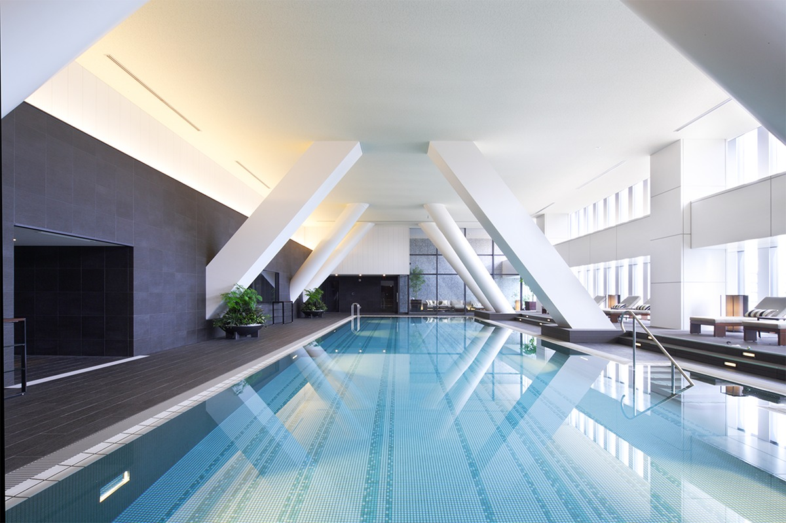

Токио · Нагата-тё · отель
The Capitol Hotel Tokyu: японский отель Кэнго Кумы у святилища Хиэ

В Нагата-тё, рядом с парламентом и правительственными зданиями, стоит отель, где удобство центра города соседствует с тишиной старого леса. The Capitol Hotel Tokyu открылся в 2010 году на месте легендарного Tokyo Hilton, а его интерьеры придумал архитектор Кэнго Кума.
История
Новое имя на старом месте
Отель на этом месте открылся в 1963 году как Tokyo Hilton. За 43 года он стал частью истории города, и у него было много верных гостей. В 2006 году здание закрыли на перестройку, а в 2010 году отель открылся снова, уже под именем The Capitol Hotel Tokyu.
Прежние традиции здесь сохранили, но смотрят на них по-новому. Интерьеры создал архитектор Кэнго Кума: он искал саму суть японского пространства и соединил её с современным оборудованием. В таком отеле легко расслабиться и чувствовать себя спокойно.
Отель стоит в Нагата-тё, правительственном квартале Токио, но вокруг тихо. С одной стороны к нему подходит лес святилища Хиэ, которое здесь называют также Санно. О празднике Санно этого святилища рассказывает отдельная статья.
Номера
Сёдзи, фусума и вид на город
Номера Club Deluxe King находятся на особых этажах, с 27-го по 29-й. В них просторные кровати Simmons, а приёмы японской архитектуры видны во всём: раздвижные перегородки сёдзи и фусума, необычная планировка. Из отдельной душевой кабины открывается вид на ночной Токио.

Совсем другой характер у Sanno Suite. Этот люкс расположен низко, на пятом этаже, и прямо перед ним лежат сад и лес святилища Хиэ. Стоит открыть сёдзи, и посреди мегаполиса вокруг оказывается природа. После ночи в просторной спальне с кроватью Simmons можно отправиться в ванную с большим джакузи. Для люксов здесь приготовлена отдельная косметика Guerlain с ярким цветочным ароматом.

Лаунж
SaRyoh: чайная над Токио
The Capitol Lounge SaRyoh открыт только для гостей люксов и клубных этажей. У входа встречает панно из нисидзин-ори, знаменитой узорной ткани Киото. Из окон лаунжа виден Токио: здание парламента, Императорский дворец, деловой квартал Маруноути.


Днём здесь подают сладости и закуски, которые готовят в самом отеле, а вечером японские и европейские закуски к коктейлям. Слово «сарё» по-японски означает чайный дом, и к напиткам здесь относятся особенно внимательно. Кофе для лаунжа делает Mi Cafeto, марка, которая строго следит за выращиванием, обработкой зёрен и качеством. Смесь создали только для SaRyoh, и попробовать её больше нигде нельзя. Есть и чай от чайной лавки из Акасаки, основанной в 1892 году, и горячий шоколад на бельгийском шоколаде.
День в лаунже в 2020 году делился так. С 11:30 до 13:30 время чая. С 14:00 до 16:30 послеобеденный чай: маленькие версии популярного хлеба из кондитерской отеля и кофе Mi Cafeto, заваренный вручную; часть напитков готовят в чайном котле тягама. С 17:00 до 20:00 время коктейлей с разными закусками и ночным видом на город. С 20:00 до 21:30 (последний заказ в 21:00) «на сон грядущий»: хороший шоколад и маленькие сладости.
Чай
Бамбуковая клетка с пирожными
Лаунж ORIGAMI на третьем этаже продолжает главное лобби, где запоминаются мотивы деревянных конструкций. Это светлый зал с высоким потолком на несколько этажей, где днём мягко падает солнце. В 2020 году отель отмечал десять лет и обновил свой послеобеденный чай: с 1 сентября 2020 года здесь подают The Capitol Afternoon Tea с меню, которое меняется по сезонам.

Взгляд сразу притягивает изящная круглая клетка: это подставка для сладостей ручной работы. Её сделала мастерская «Мияби андон сэйсакусё» в технике суруга-такэ-сэнсудзи-дзайку, плетения из тончайших бамбуковых прутьев. Идея принадлежит сотрудникам отеля, а воплотили её опытные мастера, каждую клетку вручную. Мягкая фактура бамбука подобрана под цвета лаунжа, а верх тонкой крышки украшает узел авадзи-мусуби из шнура мидзухики.
Меню к юбилею 2020 года построили вокруг логотипа отеля, феникса. Основой стали пять цветов, которые считаются цветами его крыльев: красный, чёрный, зелёный, белый и жёлтый. На верхнем ярусе лежали сладости шеф-кондитера, на нижнем закуски шефа ORIGAMI.
Посуду выбрали у Fukagawa-Seiji, мастерской фарфора арита, которая поставляет его императорскому двору. Сервиз Blue China расписан мелким узором из рисунков эпохи Мэйдзи, и такой японский и современный набор красиво смотрится на столе. В 2020 году сет с чаем стоил 6655 иен, с бокалом шампанского 8470 иен, а с шампанским без ограничения на 90 минут 12 100 иен на человека, включая сервисный сбор 10% и налог.
Отдых
Бассейн над городом
В The Capitol Fitness Club есть спортзал с новыми тренажёрами, крытый бассейн с подогревом длиной 20 метров, джакузи и сауна. Главное здесь в том, что заниматься можно на высоком этаже, глядя на Токио.

В 2020 году спортзал и бассейн для гостей были бесплатными. Раздевалка с ванной, сауной и зоной отдыха стоила 2000 иен без налога за посещение, а для гостей клубных этажей тоже была бесплатной. Клуб работал с 6:30 до 20:00, приём до 19:00.
The Capitol Hotel Tokyu
- Адрес
- Токио, Тиёда, Нагата-тё, 2-10-3
- Телефон
- +81 3-3503-0109
- Номера
- 251
- Цены / Вход
- от 53 280 иен за ночь (с налогом, без сервисного сбора)
- Заезд / выезд
- 15:00 / 12:00
- Как добраться
- подземный переход прямо в отель от станций метро Тамэикэ-Санно и Коккай-гидзидомаэ (выход 6)
Лаунж ORIGAMI, The Capitol Afternoon Tea
- Часы работы
- 14:00–18:00 (последний заказ)
- Выходные
- некоторые дни, в том числе в новогодние праздники
- Цены / Вход
- с чаем 6655 иен, с бокалом шампанского 8470 иен, с шампанским без ограничения (90 минут) 12 100 иен на человека, с сервисным сбором 10% и налогом